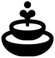

COLLECTION
Halloween
Everything Halloween-themed in Outlanders 2: the Spookylands biome, its spooky buildings, plants and food, and every map with Halloween scenery.
Biome
Spookylands is the Halloween biome. A sandbox game there offers Dead Trees, Pumpkins and the Halloween Tombstone; its page has the full build list.
Atmosphere
Heavy mist. The Halloween event hangs a heavy mist over the map for the whole level: blue-grey at night, a pinkish haze by day. It is only for looks: walking, carrying, sleep, births and needs are all unchanged. It is on Morrigwyn Stones, The Great Pumpkin Race and A Moon Part; the Halloween online challenges do not have it. A lighter version is in the game files but no map uses it.
Buildings
| Name | What it is |
|---|---|
| Halloween look of the ordinary Communal Plaza | |
 Fountain | Halloween look of the ordinary Fountain |
| Halloween Tombstone | Only in Halloween form |
| Halloween look of the ordinary Open Kitchen | |
| Halloween look of the ordinary Playground | |
| Two-Story House | Halloween look of the ordinary Two-Story House |
| Halloween look of the ordinary Zen Garden |
Plants
Food
| Name | What it is |
|---|---|
| The Halloween kitchen makes its own copy of Stew, with the same name and food value |
Maps
19 maps in all. 9 of the online challenges ran in October 2025.
Halloween maps
These 11 maps use the game’s own Halloween scene, so the whole map has the Halloween look, including its own day-and-night lighting, with a version for each Tournament Mode style (Rural, Imperial, Egyptian, Mesoamerican and Nordic).
| Map | Kind | Also on the map |
|---|---|---|
| Morrigwyn Stones | Story or standalone map | Halloween trees, gravestones, candles, spooky fences, Halloween pumpkins and heavy mist |
| The Great Pumpkin Race | Story or standalone map | Halloween trees, candles, spooky fences, gravestones and heavy mist |
| A Moon Part | Story or standalone map | gravestones, candles, spooky fences, Halloween trees and heavy mist |
| Mysterious Gingerbread Man Seminar | Online challenge, 2025-10-22 | gravestones, Halloween trees, spooky fences and candles |
| "Friends in the Frost" Redux | Online challenge, 2025-10-23 | Halloween trees, gravestones and candles |
| Spooktown | Online challenge, 2025-10-24 | gravestones, Halloween trees and candles |
| Spooky Veggie Ritual | Online challenge, 2025-10-27 | gravestones, Halloween trees and candles |
| "Save the Forests" Redux | Online challenge, 2025-10-28 | gravestones, Halloween trees and candles |
| Dark Stew Feast | Online challenge, 2025-10-29 | gravestones, Halloween trees, spooky fences and candles |
| "Drifting Docks" Redux | Online challenge, 2025-10-30 | Halloween trees |
| The Pit of Thorns | Online challenge, 2025-10-31 | gravestones, Halloween trees, spooky fences and candles |
Other maps with Halloween touches
Ordinary scenes with Halloween decorations or buildings added.
| Map | Kind | What is Halloween about it |
|---|---|---|
| Hollowgrounds | Online challenge, 2025-04-18 | gravestones, Halloween trees, spooky fences, candles and Halloween pumpkins |
| Twins of the Hill | Online challenge, 2025-07-18 | gravestones and Halloween trees |
| "Hollowgrounds" Redux | Online challenge, 2025-07-22 | gravestones, Halloween trees, spooky fences and candles |
| "Twins of the Hill" Redux | Online challenge, 2025-09-11 | gravestones, Halloween trees and candles |
| Dark Newspaper Myth | Online challenge, 2025-10-20 | gravestones, spooky fences and candles |
| "Dark Stew Feast" Redux | Online challenge, 2026-02-10 | gravestones, spooky fences and candles |
| Flavorful Barley Porridge Sweepstake | Online challenge, 2026-03-18 | Halloween trees |
| "The Pit of Thorns" Redux | Online challenge, 2026-03-26 | Halloween trees |
A few other maps offer one of the Halloween-style buildings without any Halloween scenery; each building’s page lists where it can be built. Found from each map’s scene, the objects placed on it and its build list.
Seen in play
The Halloween event fills the map with heavy mist: blue-grey at night, a pinkish haze by day. tested in play, 2026-11-08
Matches the game data: the "Halloween Event" level event lasts 9,999 days and holds one particle system and no gameplay effect (every multiplier is 1). It is placed on The Great Pumpkin Race, Morrigwyn Stones and A Moon Part.
On Halloween maps the candles at the gravestones burn with green flames, and small green lights drift among the trees at night. tested in play, 2026-11-08
The map places 37 Halloween candles and three Fireflies events; which effect makes the drifting green lights is not settled from the files.